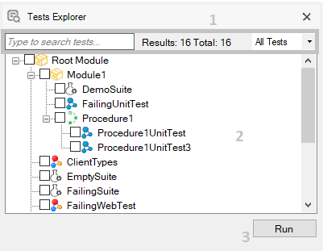
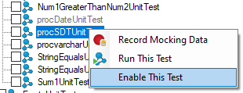

The Tests Explorer window shows a hierarchy including all the test objects present in the currently open Knowledge Base, and its parents' folders.

This section has two filters and one information label.
This is the main section and shows a tree structure that contains test objects and their ancestors. Disabled tests will be shown in gray.
Click it to run all the checked test nodes.
There are four different contextual menu options available on this window: Record Mocking Data, Run This Test, Enable/Disable This Test and Run This Suite.

Runs the selected test saving mocking data for future local executions. See Database Mocking for more information about this feature.
Runs the selected test.
Runs the selected suite.
Enables/disables the selected test.
Relocating tests and other objects present on the tree structure performing drag and drop actions is supported. Take into account that only folders that already contain tests are shown and, if you leave any container object (module. folder, or testable KBObject) empty, it will be removed from this view since it no longer contains a test.
| Backlinks | ||
| Toc:Automated Testing | Changelog GXtest | Tests Explorer window (GeneXus 17 upgrade 2 or prior) |
| Tests Explorer window (GeneXus 17 upgrade 3 or prior) |